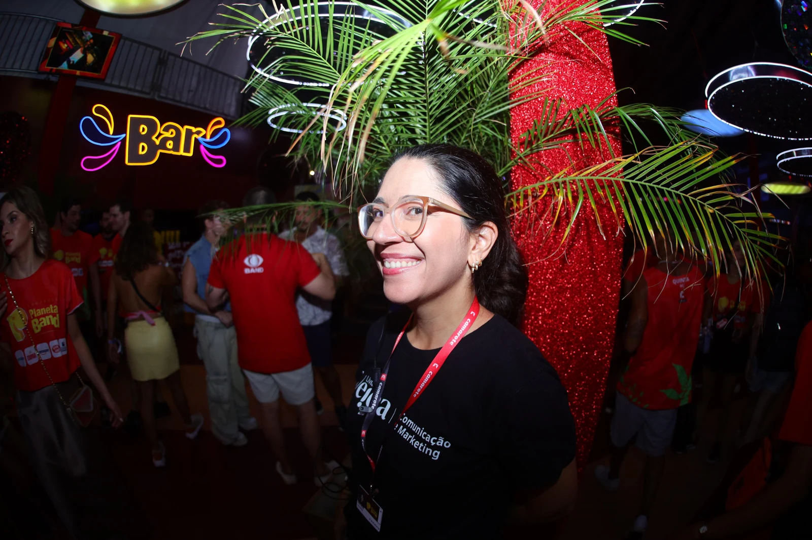
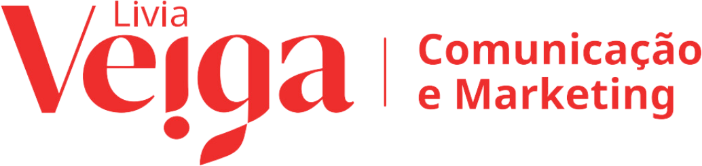
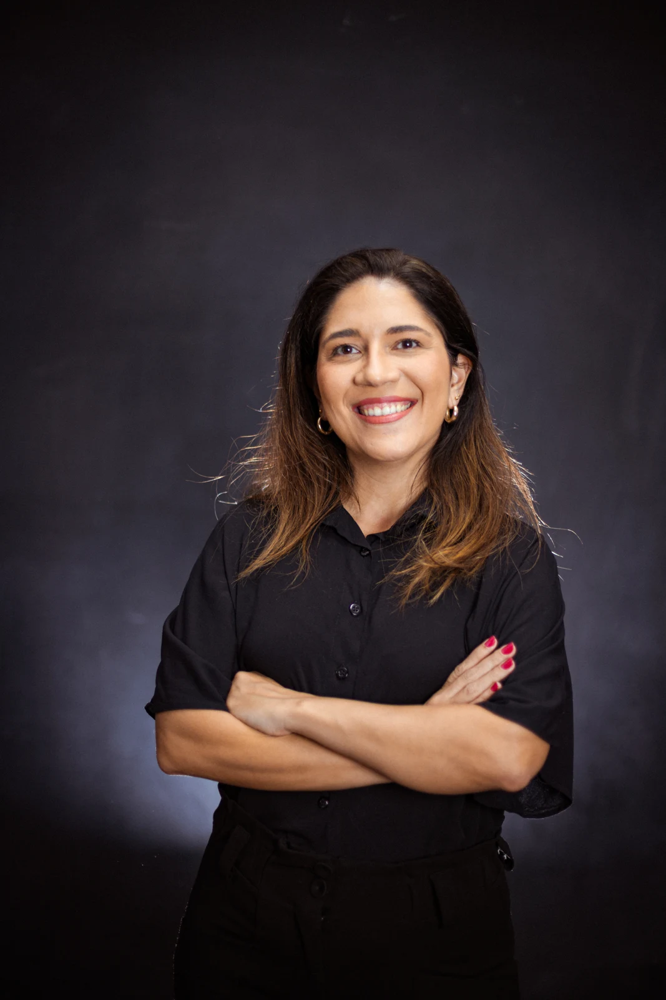
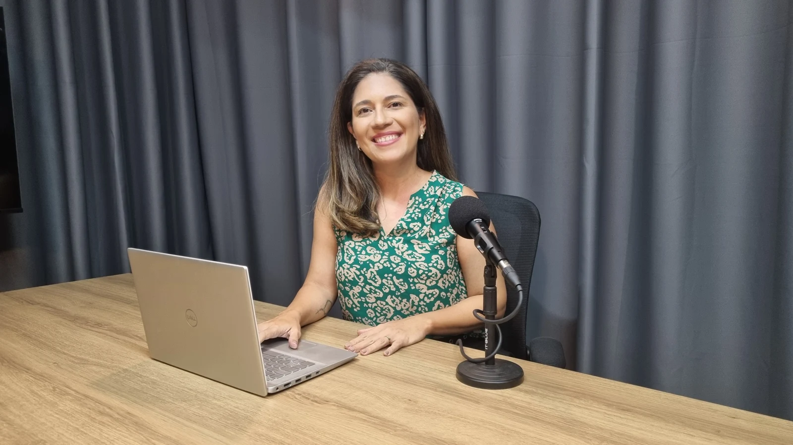
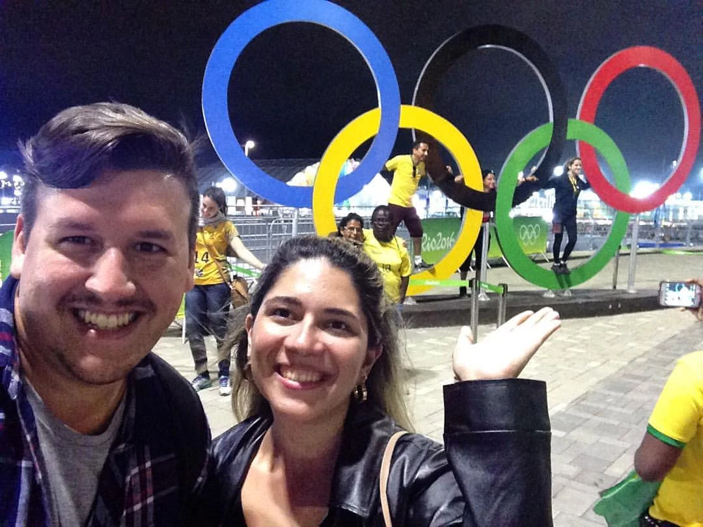
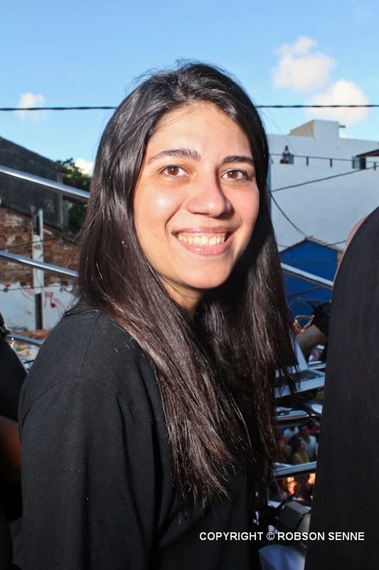

01 /Sua marca
Sua marca
em pauta.
Histórias relevantes, relacionamento com a imprensa e presença nos espaços certos.
Vamos falar sobre isso

Vamos conversarESTRATÉGIA, RELACIONAMENTO & REPUTAÇÃO
Conectamos marcas, pessoas e ideias
com quem precisa ouvir.

Histórias que
cruzam a nossa.
Histórias relevantes, relacionamento com a imprensa e presença nos espaços certos.
Vamos falar sobre isso
02 / QUEM FAZ ACONTECER
Por trás de cada marca, existem pessoas.
Por trás da VEIGA, existe uma história
de encontros, escuta e comunicação.
Jornalista, administradora e mestre em Administração, Lívia reúne mais de 20 anos de experiência em comunicação. Sua trajetória passa por redações, televisão, rádio, artistas e grandes eventos.
Especialista em Comunicação Corporativa e professora universitária, conecta a vivência de mercado ao conhecimento em gestão, marketing e reputação.

anos de experiência
em comunicação
LÍVIA VEIGA / FUNDADORA & ESTRATEGISTA
Encontros que viraram projetos.
Projetos que construíram presença.
Conheça algumas dessas histórias.
Comunicação no ritmo de um dos maiores encontros culturais do país.
Planejamento de comunicação, relacionamento com a imprensa, conteúdo em tempo real e ações de relações públicas com celebridades e influenciadores no Carnaval de Salvador.

MÚSICA / ESPORTEQuando música, esporte e comunicação entram em sintonia.
Ação de comunicação para a banda Jammil em parceria com a Seleção Brasileira Feminina de Handebol durante os Jogos Olímpicos Rio 2016, conectando a música da banda à programação e à cobertura do evento.

ASSESSORIA / ENTRETENIMENTORelacionamento com a imprensa dentro e fora dos palcos.
A trajetória de Lívia com a equipe de Claudia Leitte inclui assessoria de imprensa e a comunicação dos cruzeiros Claudia Leitte On Board, em 2011 e 2013, com atendimento à imprensa, entrevistas e cobertura a bordo.
O QUE NOS MOVE
Acreditamos em histórias reais, relações próximas e comunicação com responsabilidade. É assim que ajudamos marcas a encontrar sua voz — e a fazer parte das conversas que importam.
Conte o momento da sua marca.
Vamos pensar nos próximos
passos juntos.